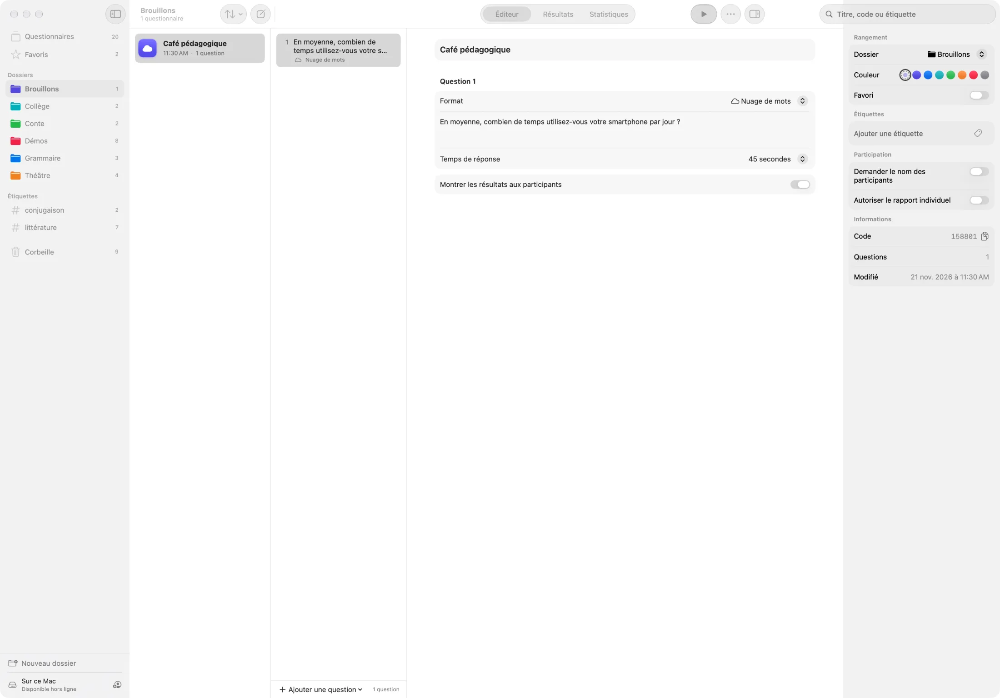

Une IA locale, rien ne sort du Mac.
Avec Ollama, Audience résume les résultats, repère les difficultés et propose des pistes de reprise. Sans clé API, sans envoi des noms des participants, et hors ligne une fois le modèle installé.
Audience pour Mac
Préparez vos questionnaires, projetez-les en plein écran et voyez les réponses de la salle arriver en temps réel. Une vraie application Mac, rapide, élégante et utilisable hors ligne.
Gratuit et libre · macOS 26 ou ultérieur · Apple Silicon et Intel

Préparer
Dossiers colorés, étiquettes, favoris et recherche instantanée : retrouvez n’importe quel questionnaire par son titre, son code ou son étiquette. Glissez, déposez, c’est rangé.

Présenter
Lancez le direct : un QR code s’affiche en grand, les téléphones patientent, puis tout le monde commence en même temps. Flèches pour avancer, C pour corriger, R pour les réponses.


Analyser
Taux de réussite, réponses les plus fréquentes, export CSV. Et, si vous le souhaitez, une synthèse rédigée par une IA qui tourne sur votre Mac.
Avec Ollama, Audience résume les résultats, repère les difficultés et propose des pistes de reprise. Sans clé API, sans envoi des noms des participants, et hors ligne une fois le modèle installé.
Réponses justes et fausses, taux de réussite et réponses fréquentes, question par question.
Connectez votre compte : questionnaires, dossiers et étiquettes se retrouvent des deux côtés.
Glissez un fichier Markdown, une archive du site ou collez simplement le texte d’un questionnaire.
SwiftUI, Liquid Glass, raccourcis clavier, plein écran, mode sombre. Sans Electron ni navigateur caché.
Gratuite, libre et sans publicité. Le code source est ouvert à tous.
Requiert macOS 26 ou ultérieur · Application universelle signée et notarisée par Apple
Décompressez l’archive, puis glissez Audience dans le dossier Applications.